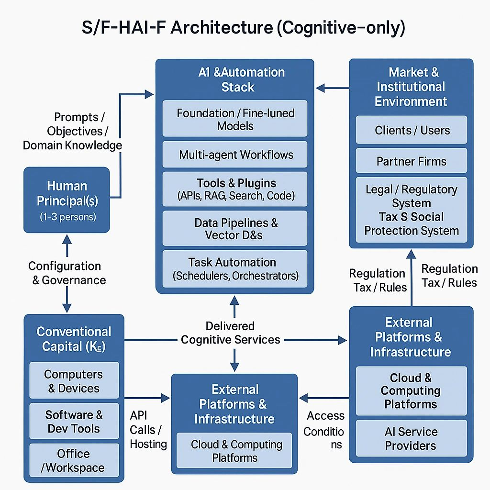

Single-/Few-Human–AI Firms and Single-/Few-Human–AI–Robot Firms:

New Archetypes under the MMC Framework
Author: Dr. Shaoyuan Wu
ORCID: https://orcid.org/0009-0008-0660-8232
Affiliation: Global AI Governance and Policy Research Center, EPINOVA
Date: November 15, 2025
1. Introduction
With the rapid development of generative AI and workflow-based intelligent agents, “one person + a suite of AI tools” is becoming a realistic basic unit of production. A single individual, empowered by cloud-based models, multi-agent systems, and automated workflows, can now perform tasks that previously required a small or even medium-sized firm. This phenomenon alters not only the organization of production, but also challenges the traditional microeconomic triad of households–firms–government as the primary analytical units.
Under current legal and institutional arrangements, a “one person + AI company” is still formally categorized as a firm: contracts are signed by the human or their legal entity, and legal liability ultimately falls on human or corporate persons. However, when we look inside this entity, especially at its production function, capital structure, industry embedding, and risk profile, its behavior diverges significantly from both conventional multi-human firms and traditional sole proprietors. This divergence is strong enough to justify treating it as a distinct type of economic unit: a Single-/Few-Human–AI Firm (S/F-HAI-F).
Moreover, when AI is coupled with robots, light manufacturing systems, or automated physical devices, we obtain a further extension: the Single-/Few-Human–AI–Robot Firm (S/F-HAIR-F), which directly participates in manufacturing, agriculture, logistics, and other physical sectors. Within a broader MMC (Micro & Mini-scale Corporate Sector) framework, this article proposes a preliminary economic analysis of S/F-HAI-F and S/F-HAIR-F as new firm archetypes, not yet a completely new category on par with “household” and “firm,” but clearly distinct enough to merit separate modeling within the firm class.
2. Human–AI Firms as New Types of Microeconomic Units
In microeconomics, a “unit” of analysis is typically characterized by several core features: it possesses a reasonably unified objective function, operates under identifiable constraints, acts as a basic contracting and liability-bearing entity, and appears in the market as a coherent behavioral unit associated with a well-defined demand schedule, supply behavior, or strategy set.
Under existing law, a “one-person + AI” entity meets all these criteria for a firm. The human owner defines the objective function, while constraints arise from their time, skills, and budgets for AI and cloud services. Contracts and legal responsibility attach to the individual or their business, and to the market the entity appears as a single supplier or buyer rather than a swarm of agents, fitting squarely within the conventional notion of a microeconomic firm.
From this top-level perspective, there is no need to introduce a new category alongside households and firms. However, at the intra-firm level, a single- or few-human firm built around AI looks markedly different from traditional organizations: it relies heavily on AI services, data pipelines, and automated workflows as core production factors; its cost structure tends toward high fixed costs and near-zero marginal costs; it is structurally dependent on AI platforms and digital infrastructure providers; and it exhibits unusually high labor leverage, replacing multi-person teams with one human (or a very small team) plus a stack of AI agents.
For these reasons, within the MMC framework, it is useful to treat S/F-HAI-F and S/F-HAIR-F as distinct sub-types of the firm, with their own production functions, capital compositions, industry mappings, and evolutionary paths.
3. The Single-/Few-Human–AI Firm (S/F-HAI-F)
3.1. Production Function and Capital Composition
A Single-/Few-Human–AI Firm (S/F-HAI-F) can be defined as a production unit consisting of one, or at most a very small number of, human decision-makers plus a suite of AI systems (large language models, multi-agent workflows, automation tools), whose primary output is informational, knowledge-based, or decision-oriented services.
Let H denote the number of human principals involved in decision-making and day-to-day operations. By definition of S/F-HAI-F in this framework, we assume:
0 < H ≤`H, H is a small number (e.g., 1–3).
Abstractly, we can write its production function as:
Y = F(Lh, Kai, Kc),
where:
- Lh: human labor input, including time, skills, expertise, and social capital;
- Kai: AI-related capital: model subscriptions, fine-tuned weights, vector databases, automation pipelines, etc.;
- Kc: conventional capital: computers, software, office space, basic tools.
Compared to classic labor–capital production functions, S/F-HAI-F exhibits several distinctive traits:
1) Highly leveraged human capital
With AI support, a single person (or very small team) can perform roles that would traditionally require a larger staff: product manager, analyst, developer, writer, customer support, and more. AI acts as a multiplicative factor on the limited human cognitive labor available in such a tiny firm.
2) High fixed costs with low marginal costs
Subscriptions and cloud services form a relatively stable fixed cost base, while the marginal cost of serving an additional client or producing an extra digital output is near zero within capacity limits, generating a wide region of increasing returns to scale that is especially pronounced when the human headcount is extremely small.
3) Partially non-exclusive algorithmic capital
Although fine-tuned models, proprietary data, and custom workflows create some exclusivity, the underlying platforms and models are typically provided by large AI companies. This makes S/F-HAI-F structurally dependent on external platforms and raises questions about bargaining power, platform governance, and the vulnerability of single-/few-human firms to platform policy changes.
3.2. Industry Embedding and Boundaries
In sectoral terms, S/F-HAI-F is currently concentrated in the tertiary sector, particularly in highly digital and knowledge-intensive domains, such as:
- Policy, legal, and economic consulting;
- Financial and compliance analytics;
- Software, game, and tool development;
- Online education, personalized tutoring, training programs;
- Media, content creation, branding, and personal IP operations.
Even in manufacturing and agriculture, S/F-HAI-F can play critical roles on the cognitive side: optimization, simulation, supply chain design, predictive maintenance, and so forth. In these cases, however, the firm remains a “brain without hands”: physical execution is still carried out by traditional firms, workers, or separate robotics providers. What is new is that a single human, or a very small human team, can occupy the central decision and design position, orchestrating substantial real-world impact via AI.
4. The Single-/Few-Human–AI–Robot Firm (S/F-HAIR-F)
When a Single-/Few-Human–AI Firm incorporates robots and physical automation, it becomes a Single-/Few-Human–AI–Robot Firm (S/F-HAIR-F). In contrast to S/F-HAI-F, an S/F-HAIR-F owns or directly controls a non-negligible stock of robotic capital, Kr, and uses this capital to produce tangible goods or physical services, still under the control of only one or a very small number of human principals (0 < H ≤`H).
The extended production function can be represented as:
Y = F(Lh, Kai, Kr, Kc),
where Kr denotes robots and automated systems such as collaborative arms, light manufacturing cells, 3D printers, drones, inspection robots, autonomous vehicles, and similar assets.
4.1 Sectoral Extension and “Light Manufacturing”
S/F-HAIR-F breaks the intuitive boundary that “one person + AI” can only thrive in services. With robotic capital, micro-scale firms run by a single or tiny human core can enter manufacturing, agriculture, and logistics in a more direct and integrated way:
- Manufacturing: S/F-HAIR-F can operate flexible “micro-factories” using a few collaborative robot arms, CNC/3D printing modules, and automated inspection. These are ideal for high-value, small-batch, highly customized products that can be designed and supervised by one or two humans.
- Agriculture: S/F-HAIR-F can deploy drones for spraying and monitoring, automated harvesting systems, and smart irrigation, with the human + AI system acting as the agronomic decision center and remote operator.
- Logistics and urban services: S/F-HAIR-F can manage fleets of delivery robots, inspection bots, and unmanned vehicles, providing last-mile logistics or infrastructure monitoring with minimal on-site human labor.
In these cases, the firm is no longer just providing cognitive services to other producers; it is itself a full producer, integrating decision-making and physical execution within a single-/few-human micro-unit.
4.2 Capital and Risk Profile
Adding Kr fundamentally changes the capital and risk structure of the firm.
In terms of capital composition, an S/F-HAIR-F shifts from an “ultra-light” to a “medium-asset” structure: robots must be purchased or leased, maintained, and periodically upgraded, so depreciation and asset obsolescence become core concerns for a firm that still has only one or a few humans at the center.
In terms of risk exposure, beyond platform, data, and AI policy risks, an S/F-HAIR-F now faces physical risks such as safety incidents, equipment failures, and regulatory compliance in occupational safety, environmental standards, and product liability. These risks must be managed by a very small human team, which increases the importance of robust automation, monitoring, and insurance.
Finally, spatial constraints become binding. Whereas an S/F-HAI-F can be almost location-agnostic (a “cloud-native nomad”), an S/F-HAIR-F is tied to physical infrastructure such as power, connectivity, transport, and local regulation, so its geography follows industrial and agricultural clusters rather than purely digital hubs.
Thus, even under the same “single-/few-human + AI” baseline, the transformation into an S/F-HAIR-F entails a qualitatively different economic profile, with different policy and institutional requirements.
5. Comparing S/F-HAI-F and S/F-HAIR-F and Their Evolutionary Path
Within the MMC framework, S/F-HAI-F and S/F-HAIR-F can be conceptualized as two related firm archetypes, distinguished by their control over physical execution, while sharing the defining feature of a single or very small human core.
5.1 Typological Comparison
S/F-HAI-F is a purely cognitive Single-/Few-Human–AI Firm. It creates value by processing information, models, and decisions. Its effects on the physical world are mediated by other organizations that implement its advice, designs, or control signals. The human headcount is minimal, and most “work” is done by AI systems.
S/F-HAIR-F is a cognitive–physical integrated Single-/Few-Human–AI–Robot Firm. It not only decides but also directly acts through robotic capital. It participates as a full producer in sectors that were traditionally dominated by multi-human firms with large workforces, while still maintaining a single-/few-human core.
They differ systematically in:
- Sectoral reach (services-only vs. services + manufacturing/agriculture/logistics);
- Capital mix (AI-heavy vs. AI-plus-robotics);
- Risk structure (platform/data risk vs. platform + physical risk);
- Spatial embedding (cloud-flexible vs. infrastructure-constrained).
This justifies treating them as analytically distinct within the firm class, while the single-/few-human structure distinguishes them from conventional firms in terms of internal organization.
5.2 Evolutionary Path of S/F-HAI-F and S/F-HAIR-F
Looking forward, S/F-HAI-F and S/F-HAIR-F are better understood as two differentiated, path-dependent trajectories, rather than as stages in a single linear progression. Their purposes, sectoral positioning, and capital structures are distinct from the outset, and their evolution reflects this initial differentiation.
For S/F-HAI-F, the natural path of evolution is deepening cognitive specialization and scaling of intangible outputs. Over time, an S/F-HAI-F is likely to: (i) expand the sophistication of its AI toolchains and data assets, moving from generic model use toward highly specialized, domain-specific workflows; (ii) broaden its client base or project scope without proportionally increasing human headcount, exploiting the high fixed–low marginal cost structure to scale digital services; and (iii) embed itself as a “cognitive hub” within larger value chains, coordinating information, design, and decision-making while leaving physical execution to others. In this trajectory, the firm remains intentionally “asset-light” on the physical side, optimizing for flexibility, portability, and high-value intellectual outputs.
For S/F-HAIR-F, the evolutionary logic is different: it is oriented toward densifying and coordinating physical capacity while keeping the human core small. AN S/F-HAIR-F is more likely to: (i) increase the number and diversity of robotic cells, drones, or automated systems it owns or controls; (ii) improve interoperability and remote orchestration across distributed micro-factories or micro-farms; and (iii) move up the value chain from simple contract execution toward end-to-end solutions that integrate design, production, and service. Here, the central challenge is not whether to remain “light,” but how to manage a growing physical footprint and risk profile under the constraint of single-/few-human oversight.
It is true that some S/F-HAI-F may choose, at a later stage, to add robotic capital and thereby transition into S/F-HAIR-F. However, this should be seen as one optional branch rather than the generic or “default” evolution. Many S/F-HAI-F will remain permanently cognitive-centric, just as many S/F-HAIR-F will be founded from the beginning with an explicit mandate to operate physical assets. The more general insight is that AI enables a bifurcation of micro-firm evolution: one branch that pushes the frontier of pure cognition (S/F-HAI-F), and another that pushes the frontier of tightly integrated cognition–execution at micro scale (S/F-HAIR-F).
6. Implications for Firm Theory and Policy Design
From the perspective of firm theory, introducing S/F-HAI-F and S/F-HAIR-F does not require abandoning existing frameworks such as transaction cost economics, incomplete contracts, or principal–agent models. Rather, it calls for extending them with new variables that explicitly reflect the extremely small human core: algorithmic capital and its platform dependence; robotic capital and its interaction with human labor; platform governance as a quasi-hierarchical layer above micro-firms; and extreme labor leverage, which alters the relative costs of internal versus external coordination in single-/few-human firms.
These extensions invite us to revisit classical questions: What determines firm boundaries when AI drastically lowers both market transaction costs and internal coordination costs for a very small human team? How do we define residual control rights when many “decisions” are implemented by AI agents and robots, yet legal responsibility still concentrates on one or a few humans?
On the policy side, the proliferation of S/F-HAI-F and S/F-HAIR-F raises at least four families of questions:
1) Social protection and taxation: how should tax systems and social safety nets adapt to a world in which millions of highly leveraged micro-firms, each with only one or a few humans, replace many traditional employer–employee relationships?
2) Platform and infrastructure regulation: if S/F-HAI-F and S/F-HAIR-F are structurally dependent on a small number of AI and cloud platforms, how should competition policy and infrastructure regulation prevent excessive concentration of power and ensure fair access, especially for tiny firms with little bargaining power?
3) Sector-specific regulation for S/F-HAIR-F: as S/F-HAIR-F enter manufacturing and agriculture, how should safety, environmental, and labor regulations apply to micro-scale robotic producers whose human core is extremely small?
4) Education and reskilling: what educational and training systems are needed to help workers move from traditional roles into positions where they can effectively design, supervise, and govern S/F-HAI-F and S/F-HAIR-F systems?
In this sense, S/F-HAI-F and S/F-HAIR-F function as conceptual anchors for systematically organizing these emerging policy challenges.
7. Conclusion
In summary, “one person + AI” is not simply a more efficient freelancer. In the forms of S/F-HAI-F and S/F-HAIR-F, it is evolving into a distinct class of firm archetypes with unique production functions, capital mixes, internal organization (minimal human headcount), and sectoral roles. For now, these entities still fall under the broad category of firms in microeconomics, but their internal structures and external dependencies differ sufficiently from conventional firms to justify treating them as candidate new types of microeconomic units within an expanded MMC framework.
Looking ahead, if AI systems were to acquire some form of quasi-subjective legal status, being able to hold rights, sign smart contracts, or bear limited liability, the internal governance of Human–AI–Robot Firms could change dramatically. At that point, we might need to recognize a genuinely new class of agents, such as a “Human–AI Joint Agent,” as a basic unit alongside households and firms.
For the present, however, conceptualizing S/F-HAI-F and S/F-HAIR-F as distinct sub-types of the firm offers a clear starting point for theorizing the microeconomics of human–AI–robot collaboration and for preparing the analytical and normative groundwork for potential paradigm shifts yet to come.
Recommended Citation:
Wu, S.-Y. (2025). Single-/Few-Human–AI Firms and Single-/Few-Human–AI–Robot Firms: New Archetypes under the MMC Framework. EIPINOVA. https://epinova.org/f/single-few-human%E2%80%93ai-firms-and-single-few-human%E2%80%93ai%E2%80%93robot-firms.
Share this post: